Learning Latent Protein Languages for Autoregressive Generation
University of Missouri
University of Southern California
Abstract
Autoregressive transformers are the dominant generative recipe across most tokenized modalities, yet they remain comparatively weak for protein sequence and structure generation. We argue that this gap is, in large part, a tokenization problem: raw amino acid tokens have low semantic density and tend to drift into repetitive, low-complexity regimes, while three-dimensional backbone coordinates do not form a natural discrete language at all.
We introduce two learned latent protein languages. Protein Latent Language (PLL) is a sequence-side vocabulary built on top of a frozen ESM-2 encoder and decodable back to amino acids. Structure Latent Language (SLL) is a structure-side vocabulary built on a modified version of the GCP-VQVAE tokenizer and decodable back to backbone coordinates. Under a single decoder-only recipe, PLLM and SLLM show steeper compute scaling than raw amino acid modeling, and SLLM enables fast sequence-to-structure candidate sampling with confidence-based selection.
Empirically, PLLM and SLLM improve the loss-versus-compute trends over raw amino acid modeling, with fitted scaling exponents of 0.038 for PLLM and 0.049 for SLLM compared with 0.020 for the amino acid baseline. On protein generation benchmarks, the latent languages provide a compact autoregressive interface for quality, diversity, and novelty comparisons. For sequence-to-structure generation, sampling more SLL trajectories improves oracle quality on CASP and CAMEO targets, while the confidence-based selector recovers part of this gain before coordinate decoding. These results suggest that learned protein tokenization can make decoder-only generation more effective for both sequence and structure.
Method
For protein sequences, we use a VQ-RAE approach to build the PLL tokenizer. The tokenizer learns discrete sequence-side codes from ESM-2 representations, while keeping the code stream decodable back to amino acid identities.
For protein backbones, we consider upgrading the GCP-VQVAE-style tokenizer so its latent codes carry more semantic information. The resulting SLL codes remain decodable to backbone coordinates, but are also trained to retain sequence, confidence, and representation signals. We then apply the same next-token recipe to amino acid, PLL, and SLL streams, with an SLLM sequence-to-structure variant that samples structure tokens and selects candidates using internal token confidence.
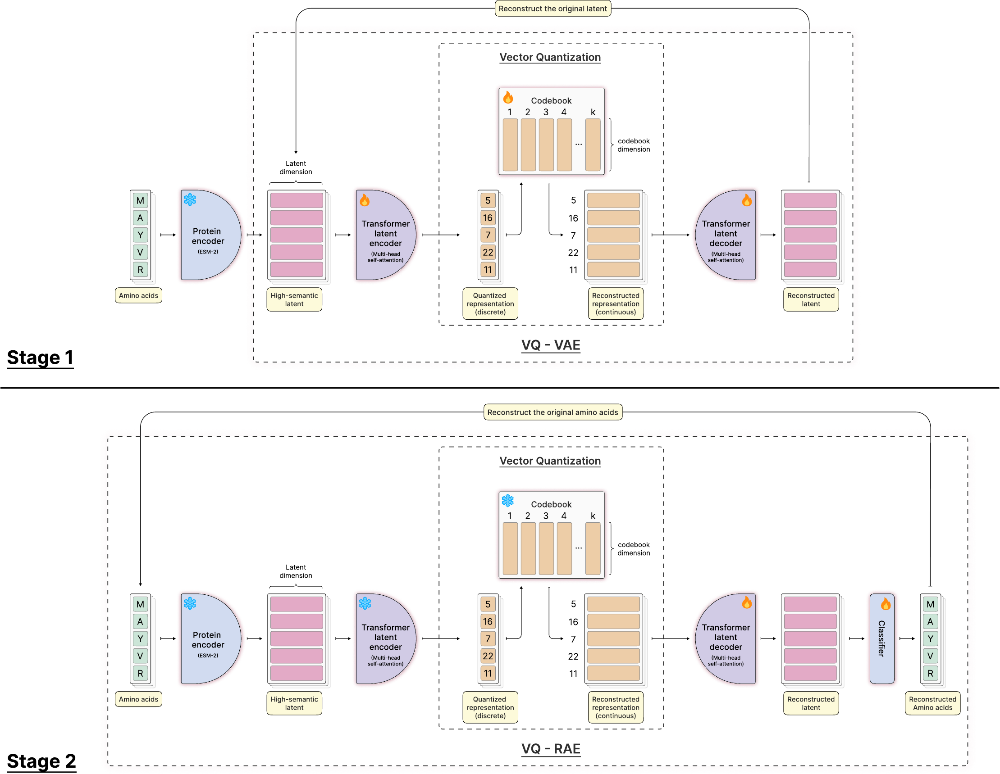
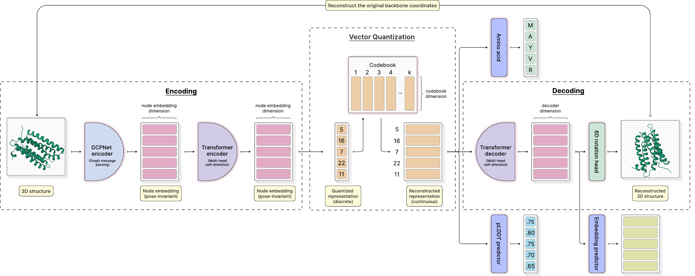
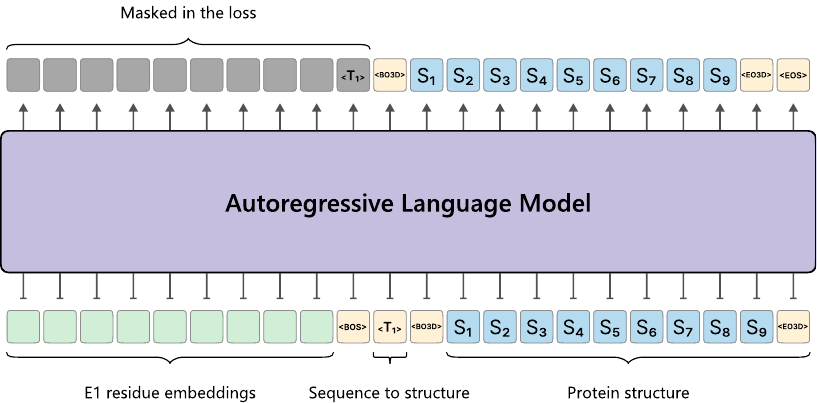
Results
This page highlights the three core result groups: scaling laws, ProteinBench, and sequence-to-structure inference-time scaling.
Scaling Laws
PLLM and SLLM have steeper loss-versus-compute trends than the raw amino acid model under the same decoder-only recipe. The fitted exponents are 0.020 for the amino acid model, 0.038 for PLLM, and 0.049 for SLLM.
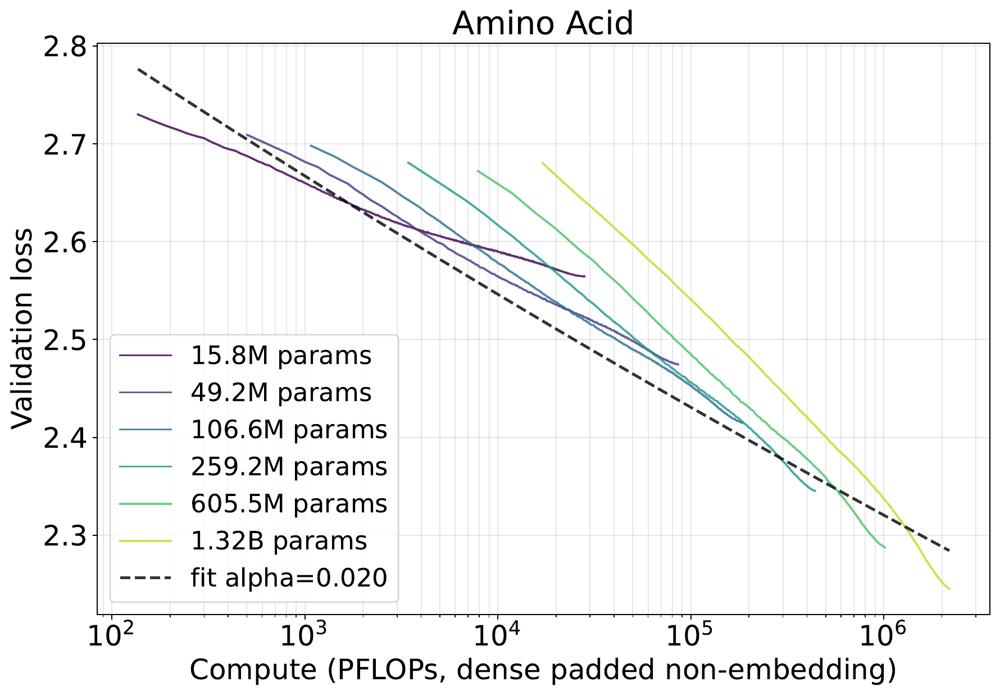
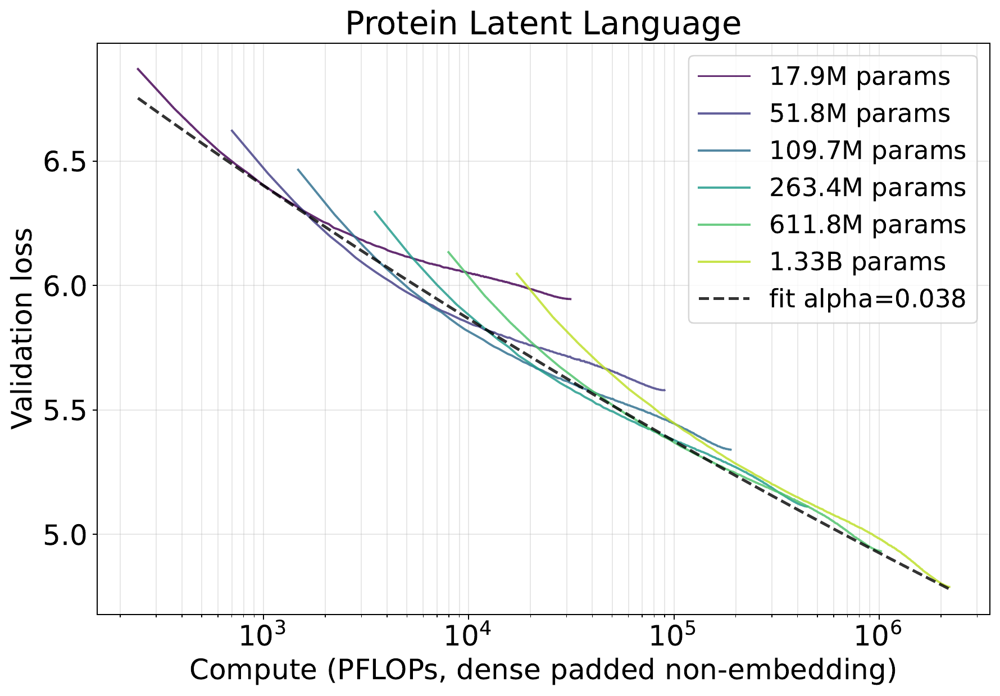
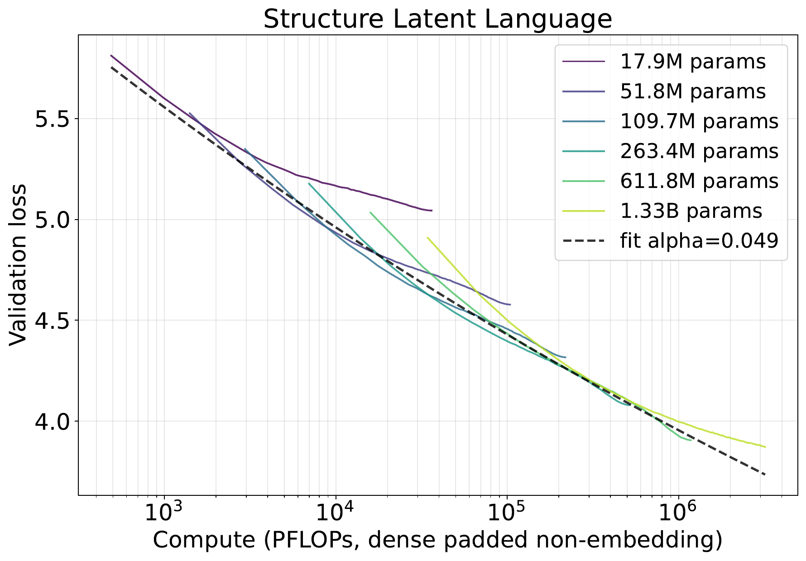
Protein Generation
We evaluate protein generation using the ProteinBench approach, which separates quality, diversity, and novelty. The sequence table compares length-conditioned sequence generation; the structure table compares decoded backbone generation.
Length-Conditioned Sequence ProteinBench
| Model | pLDDT ↑ | Pair TM ↓ | Clust. ↑ | Max TM ↓ |
|---|---|---|---|---|
| ProGen2 | 65.26 | 0.3900 | 0.9325 | 0.6675 |
| DPLM | 89.93 | 0.5100 | 0.7450 | 0.8525 |
| ESM3 | 53.24 | 0.3550 | 0.9750 | 0.6925 |
| PLLM | 59.86 | 0.2567 | 0.9700 | 0.6368 |
| PLM | 65.26 | 0.2413 | 0.9250 | 0.5859 |
Averaged over lengths 100, 200, 300, and 500 at T = 0.5.
Structure-Design ProteinBench
| Model | scTM ↑ | scRMSD ↓ | Pair TM ↓ | Clust. ↑ | Max TM ↓ |
|---|---|---|---|---|---|
| Protpardelle | 0.9289 | 1.5502 | 0.7477 | 0.2175 | 0.7966 |
| ProteinGenerator | 0.7524 | 2.5888 | 0.6554 | 0.4175 | 0.5806 |
| La-Proteina | 0.9677 | 0.7871 | 0.6231 | 0.6550 | 0.7369 |
| RFdiffusion | 0.9200 | 1.8900 | 0.4200 | 0.6325 | 0.6675 |
| SLLM | 0.5390 | 3.3974 | 0.4558 | 0.9175 | 0.5536 |
Averaged over lengths 50, 100, 300, and 500.
Inference-Time Scaling
We adapt the pretrained SLLM for sequence-to-structure prediction by encoding the input amino acid sequence with an E1 protein encoder and then autoregressively sampling SLL structure-token trajectories. Each sampled token stream can be decoded into backbone coordinates by the fixed SLL decoder. To test whether extra sampling is useful, we evaluate oracle best@k after coordinate decoding and compare it with a DeepConf-style selector that uses only internal SLL-token confidence and token-space consensus before decoding. We report the full CASP14/15/16 combined tuning-set curves and the held-out CAMEO-2024 curves.
CASP14/15/16 Combined
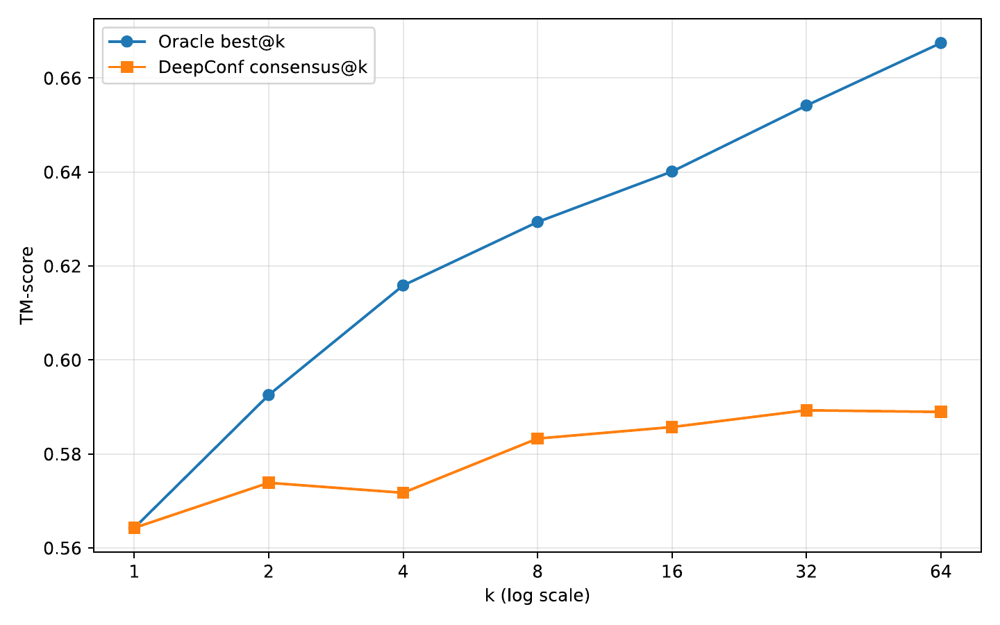
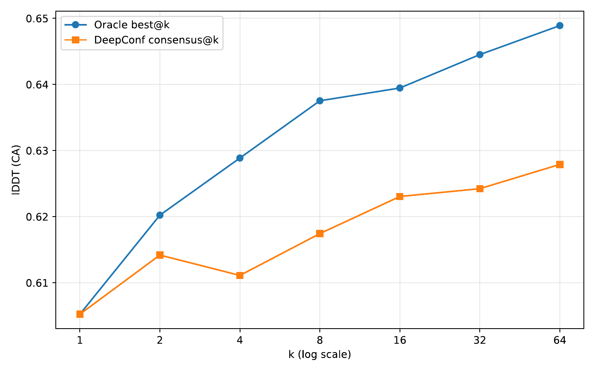
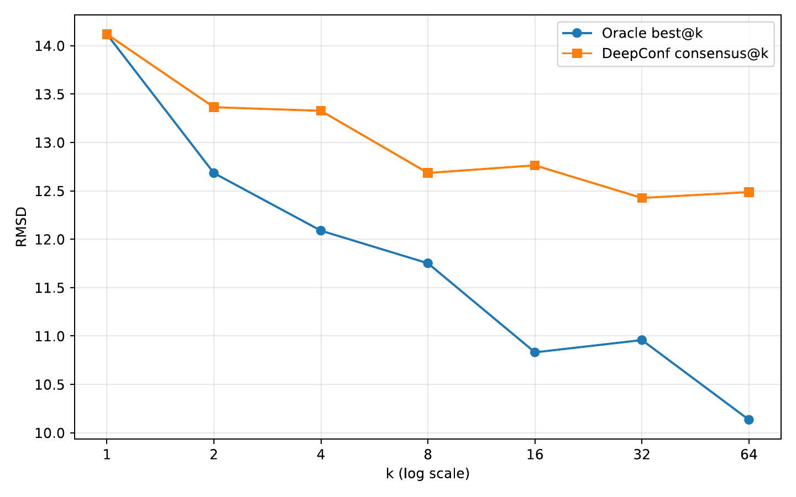
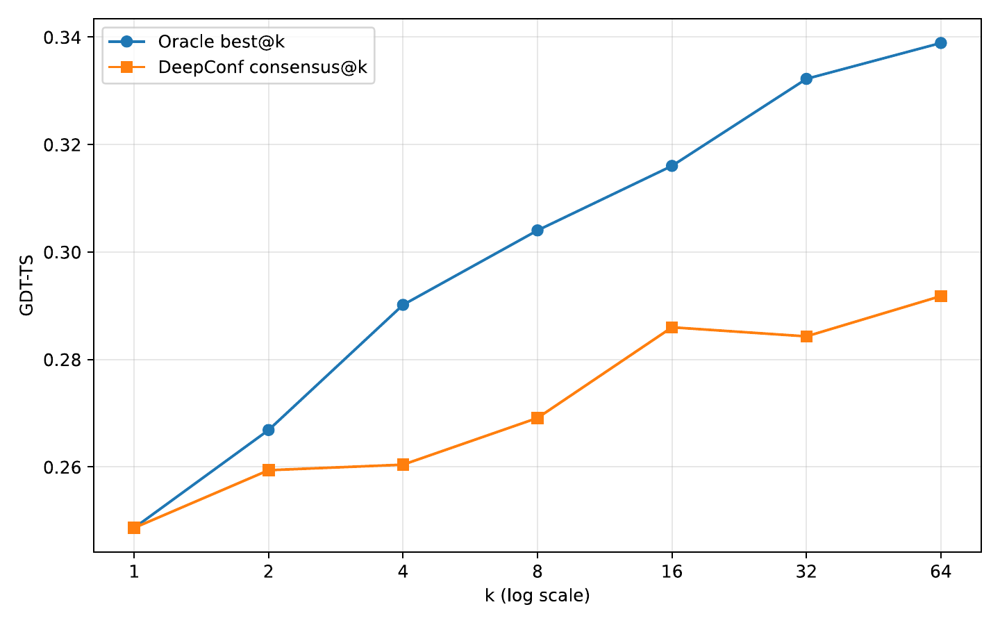
CAMEO-2024
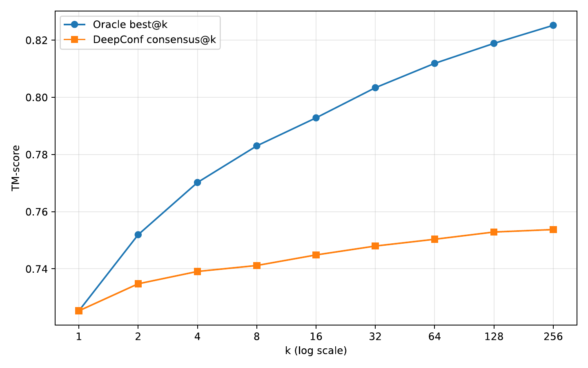
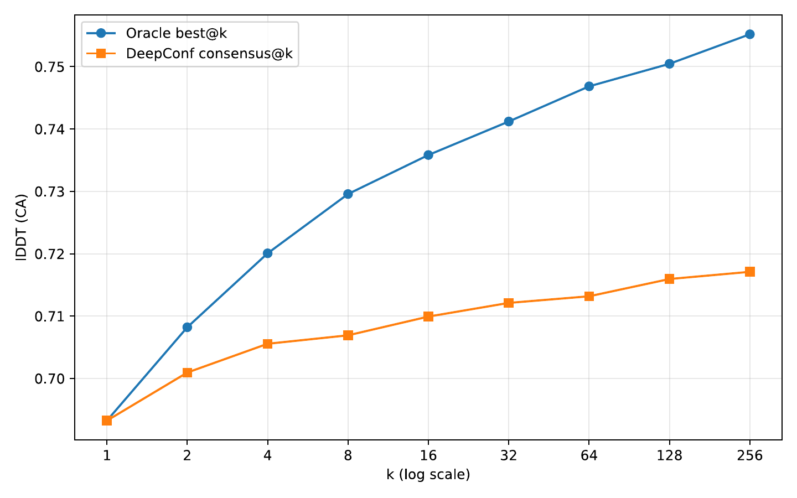
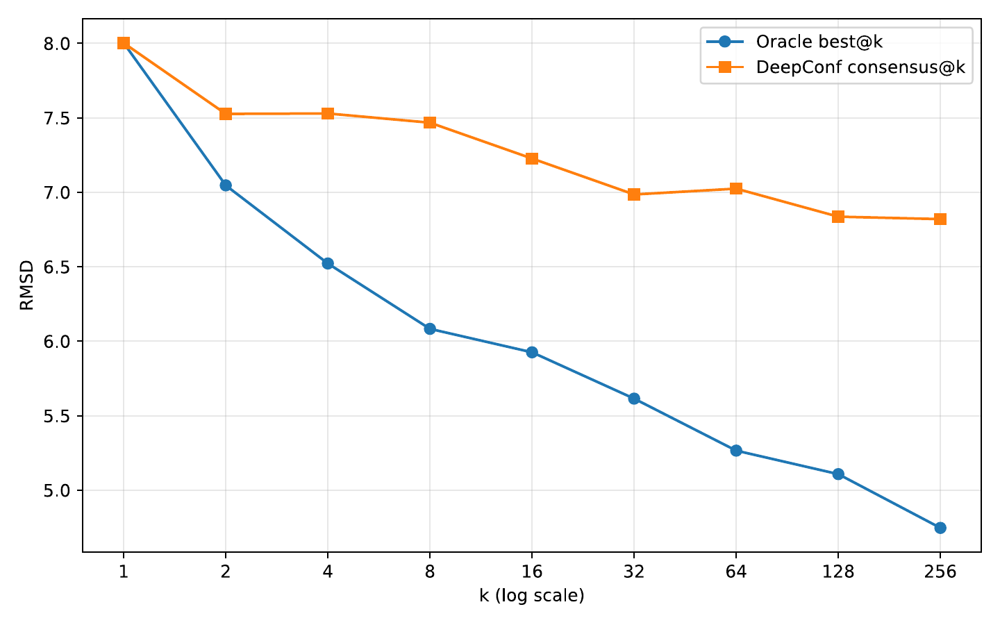
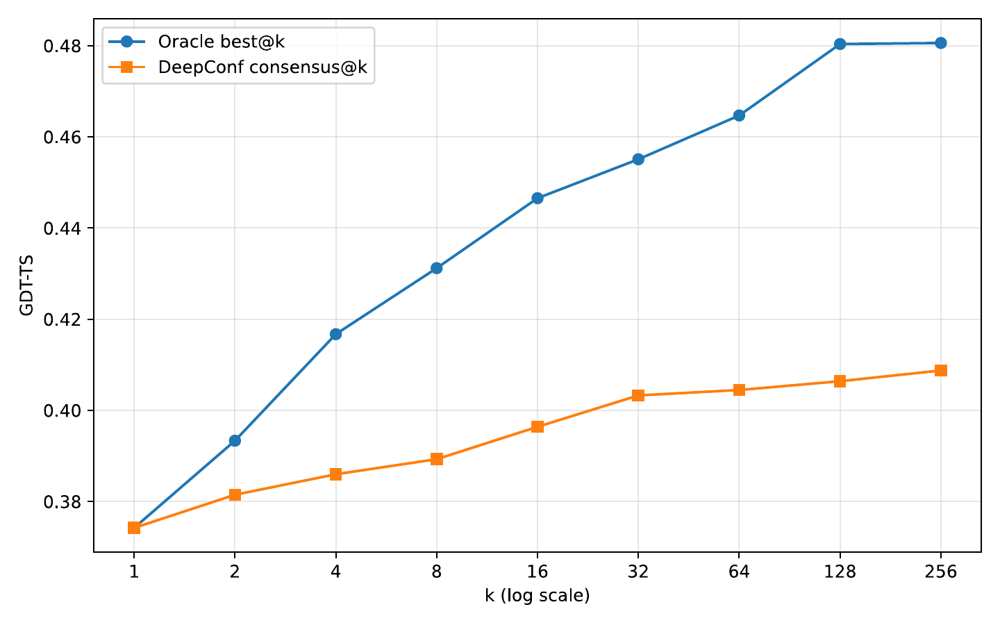